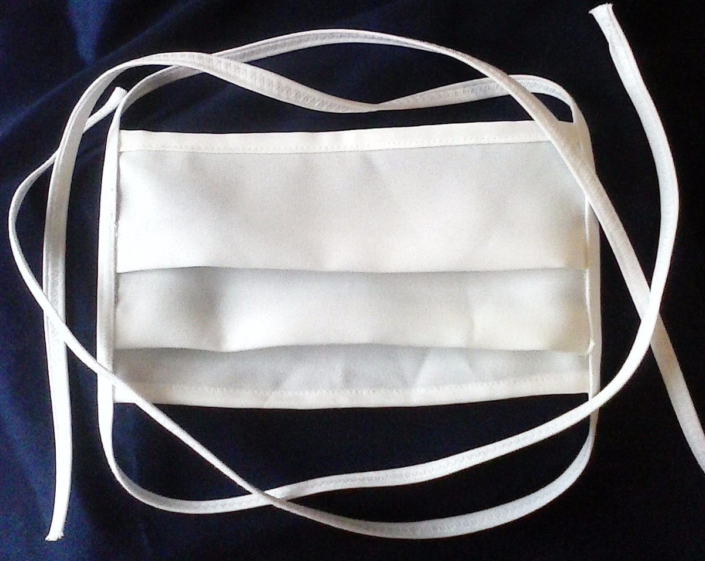
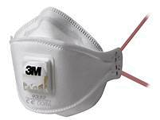

¿Cómo reutilizar las mascarillas según su tipo?
Debido a la contingencia actual, la gente ha disminuido la cantidad de salidas abruptamente, esto parece un alivio para el ecosistema que nos rodea, pero hay que tener en cuenta un detalle, la industria farmacéutica ha elevado la producción de mascarillas, pero aún así la demanda sigue siendo mayor cada día. Debido a las condiciones que hay actualmente, consideramos relevante que se sepa métodos de desinfección para así en caso de que sea necesario, darles otro uso.

Mascarilla desechable:
Mascarilla de tela:

Mascarilla FFP U N95 (filtro)

.png)
Esta mascarilla es la más común de ver, esto debido a que su costo de producción es muy barato, toda empresa de primera necesidad que siga produciendo durante esta pandemia, ha de hacer entrega de estas mascarillas también conocidas como desechables/higiénicas, su uso efectivo es de aproximadamente 4 horas. Para darles otro uso se recomienda que se dejen en un lugar expuesto al sol por 7 días, o en su defecto, en una bolsa hermética para horno a 70°C durante 30 minutos en el horno. (Se recomienda que estos procesos se apliquen con más de una mascarilla a la vez, para maximizar la cantidad de usos sin tener que esperar tanto tiempo, u ocupar el horno excesivamente)
Su nivel de protección es muy parecido al de las mascarillas "higiénicas" que han sido repartidas tanto por el gobierno como por empresas para proteger la salud y bienestar de sus trabajadores, para aumentar su eficacia tiene que contar con múltiples capas para una mejor protección. En el supuesto caso de un único encuentro con una persona con co-vid (asíntomatica) las posibilidades de que esta transmita la enfermedad se reducen de un 17% a un 7%, de todas formas se recomienda mantener la distancia correspondiente, al menos el metro puede hacer que el riesgo de contagio se reduzca hasta 2.6%. ¿Cuántas veces puedo usarlas antes de que dejen de cumplir su función? Mientras se vayan lavando después de cada uso, no hay problema en utilizarlas nuevamente. - La recomendación dada por Jaime Barrio, del Consejo Científico del colegio de Médicos de Madrid: "Lavenlas a máxima temperatura, y si es posible a más de 60°C".
Este tipo de mascarilla más sofisticada, posee un filtro que brinda más seguridad ante posibles patógenos, su uso rinde hasta que el filtro se satura, unas 8 horas de uso continuado. incluso más puede ofrecer dependiendo del modelo. Ahora bien, el método de desinfección es parecido al de una mascarilla higiénica, en una bolsa hermética para horno 70°C durante 60 minutos en el horno (en el caso de que tenga parte metálica aplique alcohol al 70% en esta zona).